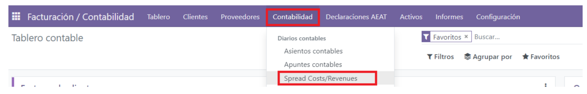
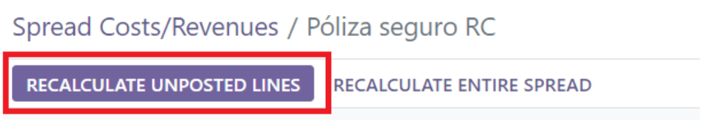
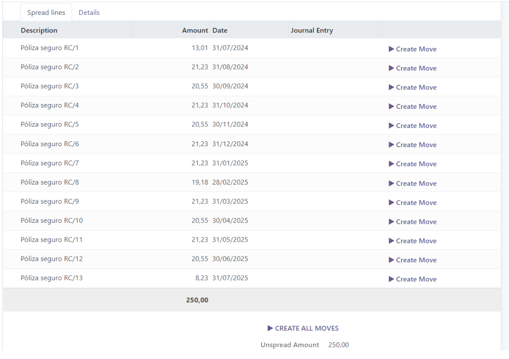

Gastos diferidos y prepagos¶
Los gastos anticipados son muy corrientes en la empresa normalmente por exigencia del acreedor. Es normal tener que pagar, por ejemplo, una póliza de crédito por adelantado, un arrendamiento o una campaña de publicidad. Nos estamos refiriendo a servicios que pagamos de antemano y que no se van a recibir hasta el ejercicio o ejercicios siguientes.
Se podría entender como gasto anticipado aquel cuyo desembolso se realiza antes de la adquisición del producto o de recibir el servicio. Si nos vamos al ámbito contable podemos decir que los gastos anticipados son aquellos que se contabilizan en un ejercicio económico, pero realmente corresponden otro posterior.
El ejemplo más sencillo y al que se suele recurrir es el del pago de un seguro. Los seguros, como es lógico, se deben pagar por anticipado y van a cubrir, por lo general, los riesgos durante un año. Si el seguro lo pagamos en el mes de abril del año 01 tendremos los riesgos cubiertos hasta abril del año 02. El pago lo hemos realizado el año 01 pero no es justo imputar todos los gastos a ese ejercicio, pues parte de lo pagado se va a disfrutar el año que viene. Esa parte de gasto que tenemos ya pagada pero que corresponde al año siguiente es el gasto anticipado.
Si, por ejemplo, nuestra empresa paga una campaña de publicidad en enero que abarca hasta el mes de junio del mismo año, el gasto lo contabilizamos en la cuenta (627) Publicidad en el momento actual. Se realizará el pago en este ejercicio y no habrá consideración de gasto anticipado pues no “toca” dos ejercicios.
Si la campaña la contratamos en septiembre y abarca hasta marzo del año siguiente, una parte del gasto contabilizado en la (627) Publicidad no corresponde a este ejercicio. Esta parte es la que consideramos como gasto anticipado y anotaremos en la (480).
Nota
El servidor comprueba una vez al día si se debe publicar un asiento. Pueden pasar hasta 24 horas antes de que se refleje el cambio de borrador a registrado.
Crear los asientos para de periodificación¶
Debemos tener presente que la contabilidad de los gastos e ingresos anticipados viene motivada por la necesidad de cumplir el principio del devengo. Es importante registra el gasto previamente, por ejemplo, el pago del Seguro, una vez registrado, nos vamos a Contabilidad ‣ Spread Cost/Revenues ‣ Nuevo

Nombre del Gasto: para identificar el tipo de gasto a periodificar.
Tipo de factura: si es un gasto o un ingreso.
Cuenta de debito.
Cantidad estimada: importe del gasto o ingreso.
Cuenta de crédito.
Número de repeticiones.
Tipo de periodo.
Fecha en la que comienza la periodificación.
Calcular por días.
Diario donde se va a contabilizar.
Una vez que tenemos los datos cumplimentados pulsaremos calcular.
 De esta manera quedaría calculado de forma automática y pulsado en crear asiento se generaría el asiento de periodificación, sino quedarían en borrador. También podemos pulsar en Crear todos los asientos directamente.